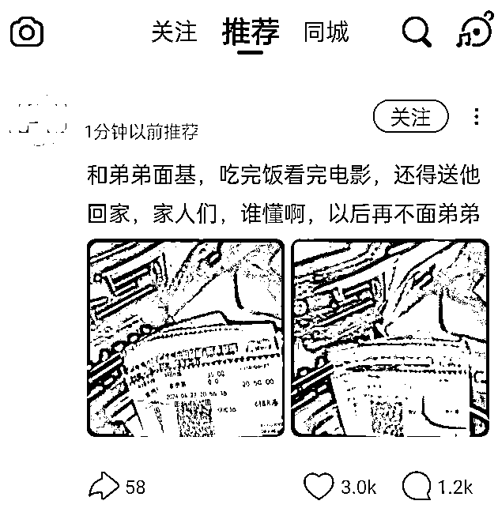

来源：https://oi14sdxswt1.feishu.cn/docx/DjR6dv6JfozBmbxNvZfcjtxXnNh
大家好，我是元英，一名初入生财的新人。前几天在微信公众号上无意间刷到了生财的文章，出于好奇点进去看了下，里面的内容让我大开眼界，没想到还有如此专业教人赚钱的干货。于是果断关注了生财的公众号，一口气读完了十几篇推文，感觉意犹未尽。于是我在百度上搜索了生财的介绍，才了解到生财有术社群创建于2017年初，累计有60000+人加入，连续七年的续费率远超行业。这才意识到自己发现了一个宝藏，毫不犹豫地支付了2765元加入生财。加入后，我疯狂浏览精华帖和中标贴，一直刷到凌晨三四点，仍觉得兴奋不已。这个社群真的太棒了！里面人才济济，星光熠熠，今后我一定要多向各位前辈们学习。
看了这么多生财的优质内容后，我深刻意识到，生财一直鼓励圈友们本着真诚利他的原则来分享优质内容。只有这样，才能结识更多优秀的圈友，把自身业务越做越大，越做越好。因此，我决定抛砖引玉，分享一下自己近期做的同城快速找对象的业务。这个业务比较适合个人操作，无法与很多大佬的百万级生意相提并论，不过这是我的亲身经历，希望真诚地分享给各位圈友，能对大家有所启发。话不多说，下面我开始介绍这个业务。
同城快速找对象的业务可以用一句话概括：通过Soul获客，引流到私域进行转化和交付，并通过会员费变现。
以下是我的业务数据：
复盘时间：2024.6.20——2024.7.3（近期因出国旅游，业务暂时中断）
人员规模：2人（我和发小分工合作，我负责流量转化，他负责课程交付，他是国家二级心理咨询师）
设备：5台手机
微信号：5个（4个用于流量转化，1个用于课程交付）
引流人数：300+（全都是经过筛选的多金优质男性）
累计转化：46人
收益：60000+
现如今，中国单身男女的数量不断攀升。据统计，截至2023年，全国单身人口已超过2亿。其中，男性单身人口达到1.1亿。这个庞大的数字背后，是无数年轻人面对的现实困境：他们中的许多人因为各种原因迟迟找不到合适的对象。
根据国家统计局的数据，近年来中国的结婚率持续走低。2013年全国结婚率为9.9‰，而2022年这一数字已经降至6.7‰，创下了近十年来的新低。这表明越来越多的年轻人对结婚生子持观望态度。同时，离婚率却在不断攀升。2021年，全国离婚率为3.1‰，这一数据也反映了婚姻稳定性的下降。
当前的经济环境也对年轻人的婚姻观念产生了影响。随着经济不景气，很多年轻人对未来的不确定感增加，他们更倾向于先找到一位可以分享生活的伴侣，满足彼此的情感需求，而不是急于进入婚姻。无论是因为工作繁忙、生活圈子有限，还是因为缺乏有效的交友平台，很多年轻人都面临着找不到对象的困境。
基于此，我入手了同城快速找对象的业务，希望帮助单身男性们解决这个难题。我的业务不仅仅是为客户提供一个认识更多优质女性的机会，更是致力于通过专业的服务，帮助每一位用户快速找到心仪的对象。我相信，随着经济的变化和社会的发展，单身人群的情感需求会愈发强烈，同城快速找对象的业务也将拥有巨大的市场前景。
同城快速找对象业务可以分为三个步骤：引流、转化和交付。
据公开数据显示，Soul的注册用户数已超过1亿，日活跃用户数也在数百万左右。关于用户的性别分布和比例，一些公开资料提供了以下信息：
用户数量和性别比例
用户发展
总体来说，Soul在年轻人群体中的用户数量和活跃度都在稳步上升，其性别比例相对平衡，男性用户稍多，是一个绝佳的引流平台。
通过Soul引流需要发布一些单身男性感兴趣的内容来吸引他们。那么，什么样的内容是他们感兴趣的呢？

不论哪种内容形式，都要结合目标用户的兴趣和需求，才能获取更多流量。 1和3可快速引流，但容易封号；2和4也可快速引流，但流量不精准；5具备长期价值，想长期做一定要真人出镜，打造个人IP，不仅流量稳定，还能提高用户成交率。
当用户通过 Soul 留下联系方式并添加到微信后，我们需要先了解用户的具体情况，再介绍服务，以便转化为付费会员。 我们提供会员制服务，用户付费成为会员后，才会帮助他们寻找对象。
服务流程如下：
目前的收费对象只针对男性，收费价格已调整过两次：
收费标准：
转化率与展望：
目前我们的转化率约为15%，做的还不错。未来，我们将进一步提高转化率，这对我们的专业服务提出了更高的要求。我们在这方面还有很大的提升空间。
交付过程是帮助付费会员快速找到对象，实现脱单目标。 这个过程充满了挑战，需要我们具备极高的专业素质。
我们的会员之所以单身并需要通过平台寻找对象，主要有以下几个原因：
1. 社交能力欠缺
2. 形象管理不足
3. 社交面太窄
4. 择偶标准过高
如果会员单身的原因只是社交能力欠缺、形象管理不足、或者社交面太窄，那么通过我们的服务，还是比较容易脱单的。例如，我们可以提供全程聊天指导、形象提升咨询、精准引流策略等方法来帮助会员增加找到合适对象的机会。
然而，如果会员因为择偶标准过高而单身，我们则需要采取更为细致和耐心的辅导方式。例如，我们需要引导会员清楚认识自身定位，适当降低期望。当然，这些工作确实具有一定的难度，需要我们投入更多的时间和精力。
在服务过程中，我们始终强调的一点是，我们的服务并不能100%保证让会员成功脱单。 我们的目标是为会员提供专业的找对象服务，让他们有机会认识更多在硬性条件上相匹配的异性，从而提高脱单的成功率。我们的角色是辅助会员拓展社交机会和提升交往能力，但最终能否成功脱单，关键还是取决于会员的主动参与和努力。通过这一方式，我们旨在合理管理会员的期望，确保他们对服务的效果有一个清晰和现实的认识，避免给自己挖一个天坑！
考虑到我们的交付能力，目前我们的服务主要包括：根据会员的个人情况量身定制Soul的展示面、指导会员通过高效的话术与感兴趣的异性进行交流、以及加微信后的聊天指导。 但要真正提高脱单成功率，绝不仅仅是加个微信那么简单，还需要我们在深入了解会员的自身情况的基础上，帮助他们改变形象，提高情商。当然，这种深度的服务需要更高的客单价，也是我们后续要发力的重点。
① 什么样的内容容易爆火？
② 如何快速了解同城找对象的市场动态？
多刷Soul的广场和同城版块，可以观察到当前用户的需求和动态。
③ 除了Soul，还有其他平台适合同城快速找对象？
④ 小白可以入手同城快速找对象的业务吗？
小白也可以做同城快速找对象，以下是一些建议：
如果你还在纠结项目能不能做、美图秀秀怎么用、剪映是什么等基础问题，那么建议先提升这方面的技能，再考虑从事同城快速找对象的业务。
⑤ 需要为会员拉微信群吗？
我个人不建议拉微信群，主要原因有以下几点：
⑥ 用户愿意付费，但不愿提供照片怎么办？
如果用户愿意付费但不愿意提供照片，可以尝试以下方法：
⑦ 如何处理没有转化的用户？
利用朋友圈：
通过持续的朋友圈运营，总会有用户被吸引并最终转化。
⑧ 如何安全收款？
建议使用支付宝收款，避免出现风险提醒和微信被封号的风险。
⑨ 为什么我的Soul账号频繁被封号？
为了避免Soul账号被封号，请注意以下几点：
遵循这些建议，可以减少账号被封的风险。
⑩ 怎么应对会员的投诉？
找对象本来就不是一个一帆风顺的过程，需要双方都有意向才能成功。作为服务方，我们可以采取以下措施来应对会员的投诉：
通过这些步骤，可以有效地处理会员投诉，维护良好的客户关系。
创业不同于打工，面对的压力是后者的十倍百倍。不过与此同时，经济上的回报也要高很多。创业需要具备良好的心理承受能力。在过去这段时间里，我们几乎每天都会遇到各种问题，解决了一个，又会出现新的问题，如此反复。尽管如此，我觉得自己真的成长了很多，能力也得到了显著提升。现在，我对自己更加有信心了。一方面，我通过实践锻炼了能力；另一方面，我有幸加入生财有术这个大家庭，这里有很多赚钱能手，向他们学习能让我少走很多弯路。接下来，我会继续努力！
我的分享就到这里，感谢各位圈友的耐心阅读。如果大家对同城快速找对象的业务感兴趣，欢迎与我多多交流。我是元英，专注于同城快速找对象业务的生财圈友！